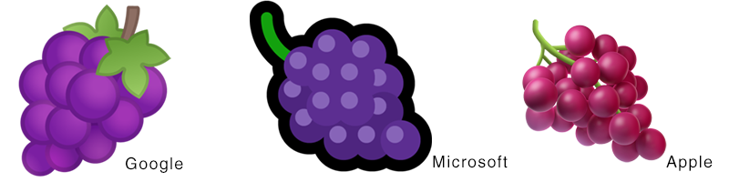
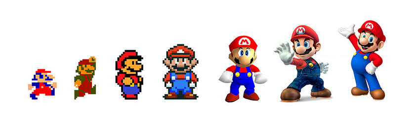
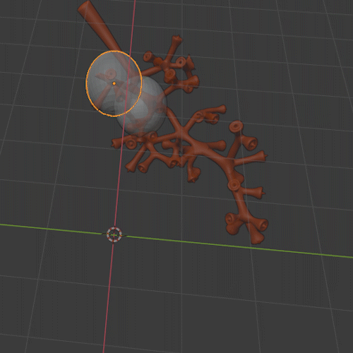
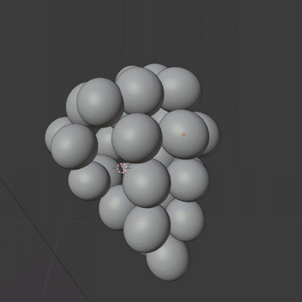
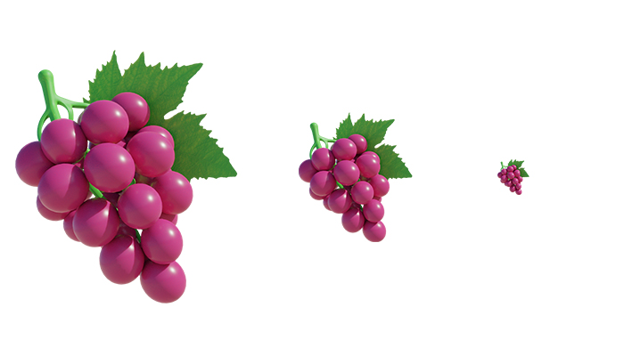
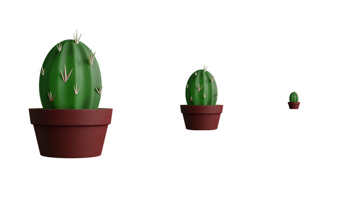
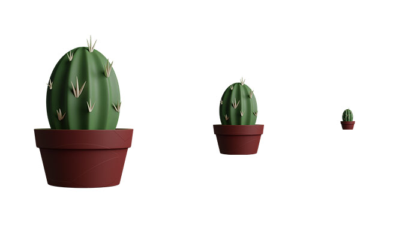

Emojiess
Abstract: Process of making a skeuomorphic graphic recognizable at a small size.

Source
The process could be as complex as you want it to be.
This is my attempt to create one.
Well that wasn't a lot of work, and to be honest I'm not a fan of the visually flat aesthetic.
Content for the screen has adopted to the change in the technology we use.
Here is a rough idea of what it looks like.

Source
Hence I started to make the grape emoji and here is my progress.
I started with placing grapes by hand but it felt unnatural.

I then simulated the grapes which was less work and it automatically added randomness.

Top View

Bottom View
From then it was just the materials, lighting and composition.


Experimentation with contrasrt.
At a small size it is difficult to distinguish the features of a graphic.
This next set is the experimentation with the texture, lighting and features to bring more contrast.


